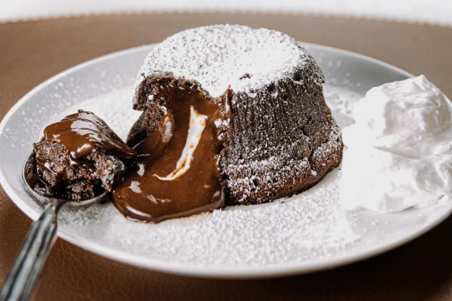

Lava Cake
Ingredientes
- 57 g de mantequilla sin sal
- 55 g de chocolate negro (mínimo 60% de cacao) en gotas o en trozos pequeños
- 50 g de azúcar
- 1 huevo grande entero + 1 yema de huevo grande
- 1/4 de cucharadita de extracto de vainilla
- 1 pellizco de sal
- 6 g de harina de todo uso
- Cacao en polvo desgrasado o azúcar glasé (para decorar)
Preparacion
-
Preparativos Iniciales:
- Calienta el horno a 220 °C.
- Tamiza la harina.
- Engrasa dos moldes individuales con mantequilla o spray desmoldante (puedes usar ramequines cerámicos, flaneras o mini-cocottes).
-
Derretir Chocolate y Mantequilla:
- En un cazo, funde al baño maría el chocolate con la mantequilla.
- Bate o remueve hasta que esté integrado y suave. Resérvalo.
-
Mezcla de Azúcar y Huevos:
- En el vaso de la batidora, coloca el azúcar, el huevo, la yema, el extracto de vainilla y la sal.
- Bate a alta velocidad hasta que espese y adquiera un color claro.
-
Incorporación de Harina:
- Añade la harina tamizada a la mezcla de azúcar y huevos.
- Mezcla hasta integrar bien.
-
Unir las Mezclas:
- Incorpora con una espátula la masa de harina a la mezcla de chocolate y mantequilla hasta que esté completamente integrada.
-
Preparación de Moldes:
- Reparte la masa en los dos moldes (aproximadamente 110-115 gramos por molde).
- Golpea la base de los moldes en la encimera un par de veces para eliminar burbujas de aire y asentar la masa.
-
Reposo y Horneado:
- Coloca los moldes en una bandeja para hornear y déjalos reposar a temperatura ambiente durante 15 minutos.
- Lleva la bandeja al horno y hornea hasta que la parte superior esté firme y los bizcochos se muevan ligeramente al agitar la bandeja.
-
Desmoldado:
- Saca los moldes del horno.
- Con cuidado, pasa la punta de un cuchillo o un palillo alrededor de los bordes para despegar el bizcocho.
- Invierte cada molde sobre un plato y déjalo reposar 30 segundos antes de desmoldar.
-
Decoración y Servicio:
- Espolvorea con cacao en polvo desgrasado o azúcar glasé.
- Sirve inmediatamente y decora a tu gusto (nata, helado de vainilla, avellanas, nueces, fresas o crema inglesa).